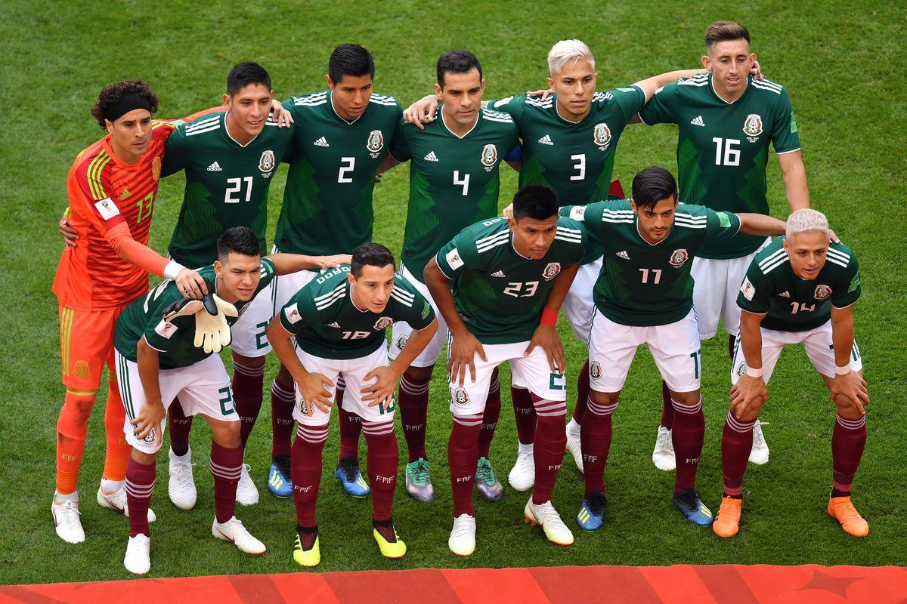

El Estadio Azteca
Mexico City, Mexico
Capacity: 87,523

World Cup
Appearances: 17 (first in 1930)
Best Result: Quarter-finals (1970 and 1986)
CONCACAF Gold Cup
Appearances: 24 (first in 1963)
Best Result: Champions 11 times (1965, 1971, 1977, 1993, 1996, 1998, 2003, 2009, 2011, 2015, 2019)
CONCACAF Nations League
Appearances: 1 (first in 2021)
Best Result: Runners-up (2021)
FIFA Confederations Cup
Appearances: 7 (first in 1995)
Best Result: Champions (1999)
Rivalry with US MNT
First Meeting: 1934 Total Meetings: 73
Mexico leads the overall series 36-22-15 (W-L-D)
Mexico has outscored the US 144-82
 El Tri Fan Page
History
Qatar 2022 World Cup
Roster
Home
El Tri Fan Page
History
Qatar 2022 World Cup
Roster
Home